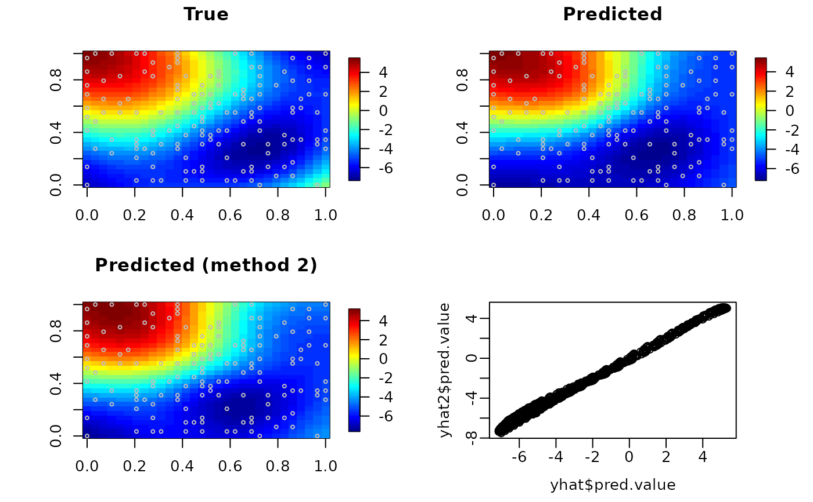

Automatic Fixed Rank Kriging
autoFRK.RdThis function performs resolution adaptive fixed rank kriging based on spatial data observed at one or multiple time points via the following spatial random-effects model: $$z[t]=\mu + G \cdot w[t]+\eta[t]+e[t], w[t] \sim N(0,M), e[t] \sim N(0, s \cdot D); t=1,...,T,$$ where \(z[t]\) is an n-vector of (partially) observed data at n locations, \(\mu\) is an n-vector of deterministic mean values, \(D\) is a given n by n matrix, \(G\) is a given n by K matrix, \(\eta[t]\) is an n-vector of random variables corresponding to a spatial stationary process, and \(w[t]\) is a K-vector of unobservable random weights. Parameters are estimated by maximum likelihood in a closed-form expression. The matrix \(G\) corresponding to basis functions is given by an ordered class of thin-plate spline functions, with the number of basis functions selected by Akaike's information criterion.
autoFRK( Data, loc, mu = 0, D = diag.spam(NROW(Data)), G = NULL, finescale = FALSE, maxit = 50, tolerance = 0.1^6, maxK = NULL, Kseq = NULL, method = c("fast", "EM"), n.neighbor = 3, maxknot = 5000 )
Arguments
| Data | n by T data matrix (NA allowed) with \(z[t]\) as the t-th column. |
|---|---|
| loc | n by d matrix of coordinates corresponding to n locations. |
| mu | n-vector or scalar for \(\mu\); Default is 0. |
| D | n by n matrix (preferably sparse) for the covariance matrix of the measurement errors up to a constant scale. Default is an identity matrix. |
| G | n by K matrix of basis function values with each column being a basis function taken values at |
| finescale | logical; if |
| maxit | maximum number of iterations. Default is 50. |
| tolerance | precision tolerance for convergence check. Default is 0.1^6. |
| maxK | maximum number of basis functions considered. Default is \(10 \cdot \sqrt{n}\) for n>100 or n for n<=100. |
| Kseq | user-specified vector of numbers of basis functions considered. Default is
|
| method | "fast" or " EM"; if "fast" then the missing data are filled in using k-nearest-neighbor imputation; if "EM" then the missing data are taken care by the EM algorithm. Default is "fast". |
| n.neighbor | number of neighbors to be used in the "fast" imputation method. Default is 3. |
| maxknot | maximum number of knots to be used in generating basis functions. Default is 5000. |
Value
an object of class FRK is returned, which is a list of the following components:
ML estimate of \(M\).
estimate for the scale parameter of measurement errors.
negative log-likelihood.
K by T matrix with \(w[t]\) as the t-th column.
K by K matrix of the prediction error covariance matrix of \(w[t]\).
user specified basis function matrix or an automatically generated mrts object.
a list from calling LKrig.MLE in LatticeKrig package if useLK=TRUE;
otherwise NULL. See that package for details.
Details
The function computes the ML estimate of M using the closed-form expression in Tzeng and Huang (2018).
If the user would like to specify
a D other than an identity matrix for a large n, it is better to provided via spam function
in spam package.
References
Tzeng, S., & Huang, H.-C. (2018). Resolution Adaptive Fixed Rank Kriging, Technometrics, https://doi.org/10.1080/00401706.2017.1345701.
See also
Author
ShengLi Tzeng and Hsin-Cheng Huang.
Examples
#### generating data from two eigenfunctions originalPar <- par(no.readonly = TRUE) set.seed(0) n <- 150 s <- 5 grid1 <- grid2 <- seq(0, 1, l = 30) grids <- expand.grid(grid1, grid2) fn <- matrix(0, 900, 2) fn[, 1] <- cos(sqrt((grids[, 1] - 0)^2 + (grids[, 2] - 1)^2) * pi) fn[, 2] <- cos(sqrt((grids[, 1] - 0.75)^2 + (grids[, 2] - 0.25)^2) * 2 * pi) #### single realization simulation example w <- c(rnorm(1, sd = 5), rnorm(1, sd = 3)) y <- fn %*% w obs <- sample(900, n) z <- y[obs] + rnorm(n) * sqrt(s) X <- grids[obs, ] #### method1: automatic selection and prediction one.imat <- autoFRK(Data = z, loc = X, maxK = 15) yhat <- predict(one.imat, newloc = grids) #### method2: user-specified basis functions G <- mrts(X, 15) Gpred <- predict(G, newx = grids) one.usr <- autoFRK(Data = z, loc = X, G = G) yhat2 <- predict(one.usr, newloc = grids, basis = Gpred) require(fields)#>#> #>par(mfrow = c(2, 2)) image.plot(matrix(y, 30, 30), main = "True") points(X, cex = 0.5, col = "grey") image.plot(matrix(yhat$pred.value, 30, 30), main = "Predicted") points(X, cex = 0.5, col = "grey") image.plot(matrix(yhat2$pred.value, 30, 30), main = "Predicted (method 2)") points(X, cex = 0.5, col = "grey") plot(yhat$pred.value, yhat2$pred.value, mgp = c(2, 0.5, 0))par(originalPar) #### end of single realization simulation example #### independent multi-realization simulation example set.seed(0) wt <- matrix(0, 2, 20) for (tt in 1:20) wt[, tt] <- c(rnorm(1, sd = 5), rnorm(1, sd = 3)) yt <- fn %*% wt obs <- sample(900, n) zt <- yt[obs, ] + matrix(rnorm(n * 20), n, 20) * sqrt(s) X <- grids[obs, ] multi.imat <- autoFRK(Data = zt, loc = X, maxK = 15) Gpred <- predict(multi.imat$G, newx = grids) G <- multi.imat$G Mhat <- multi.imat$M dec <- eigen(G %*% Mhat %*% t(G)) fhat <- Gpred %*% Mhat %*% t(G) %*% dec$vector[, 1:2] par(mfrow = c(2, 2)) image.plot(matrix(fn[, 1], 30, 30), main = "True Eigenfn 1") image.plot(matrix(fn[, 2], 30, 30), main = "True Eigenfn 2") image.plot(matrix(fhat[, 1], 30, 30), main = "Estimated Eigenfn 1") image.plot(matrix(fhat[, 2], 30, 30), main = "Estimated Eigenfn 2")